Персональные тренировки
на дому
Вовсе не обязательно иметь фитнес-зал дома (хотя его наличие-только плюс). Тренироваться в домашней обстановке всегда комфортно, а с персональным тренером еще и эффективно и безопасно.
-
Бокс,
муай-тай -
Силовые тренеровки
-
Плавание
-
Фитнесс-пауза в офисе
-
Йога
Мы гарантируем результат
Наша методика тренеровок позволяет достигать отличных результатов.
Занятие с тренером — это большая мотивация для тренировок, отсутствие посторонних людей позволяет полностью сконцентрироваться на занятии. Тренировки с нашими специалистами изменят представления о ваших возможностях.
Цены
-
Тренер с выездом
В пределах МКАД- вводная тренировка – бесплатно
- 1 тренировка – 2 500 ₽
- 10 тренировок – 23 000 ₽
- 2-я тренировка в одном месте – 1 500 ₽
- 1 тренировка для 2 человек – 3 200 ₽
- 10 тренировок для 2 человек – 30 000 ₽
За пределами МКАД- вводная тренировка – бесплатно
- 1 тренировка – 3 000 ₽
- 10 тренировок – 28 000 ₽
- 2-я тренировка в одном месте – 1 500 ₽
- 1 тренировка для 2 человек – 3 700 ₽
- 10 тренировок для 2 человек – 35 000 ₽
-
ФИТНЕС-ПАУЗА В ОФИСЕ
- 1 занятие – 2 000 ₽
- 12 тренировок – 21 000 ₽
- 20 тренировок – 34 000 ₽
-
СОСТАВЛЕНИЕ РАЦИОНА ПИТАНИЯ ДИЕТОЛОГОМ
- в пределах МКАД – 5000 ₽
- за пределами МКАД – 5500 ₽
Заполните форму и наш координатор свяжется с вами
Либо позвоните нам по телефону: +7 (495) 332-99-09
Дисциплины
-
ФитнесСиловая, функциональная тренировки
-
ЕдиноборстваБокс, муаи-тай
-
ПлаваниеВодные виды спорта
-
ЙогаХатха, Айенгара, йога для беременных
-
МассажГигиенический, спортивный, лечебный
-
Фитнес-пауза в офисеРазминка, зарядка
Тренеры
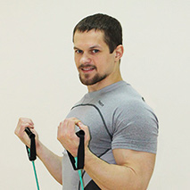
Андрей Коротевский
29 лет, Кандидат в мастера спорта по боксу
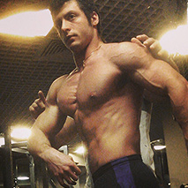
Галичевский Иван
26 лет, Мастер спорта по жиму лежа
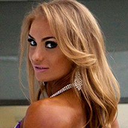
Будько Юлия
28 лет, инструктор по фитнесу
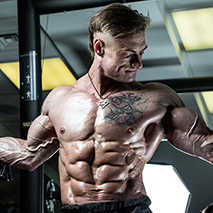
Башкатов Денис
33 года, Мастер спорта международного класса по бодибилдингу
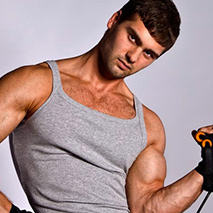
Долматов Михаил
33 года, тренер по фитнесу и массажист
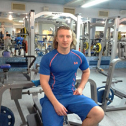
Васильев Дениc
30 лет, инструктор по фитнесу
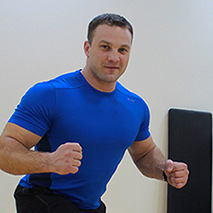
Кашин Максим
35 лет, КМС по пауэрлифтингу, КМС по жиму лежа
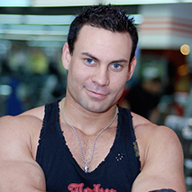
Беляев Владимир
31 год, инструктор по фитнесу
Андрей Коротевский
29 лет, Кандидат в мастера спорта по боксу
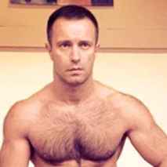
Силецкий Вадим
Инструктор по единоборствам
Возраст: 40 лет
Возраст: 40 лет
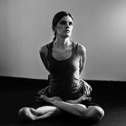
Полуэктова Ольга
Инструктор по йоге
Возраст: 32 года
Возраст: 32 года
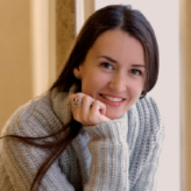
Колмакова Анна
Инструктор по йоге
Возраст: 34 года
Возраст: 34 года
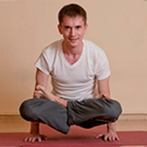
Оводков Роман
Инструктор по йоге
Возраст: 28 года
Возраст: 28 года

Бондарь Кирилл
массажист
Возраст: 26 лет
Возраст: 26 лет
Долматов Михаил
Тренер по фитнесу и массажист
Возраст: 33 года
Возраст: 33 года

Боднарчук Александр
массажист
Возраст: 26 лет
Возраст: 26 лет
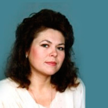
Шишканова Светлана
массажист
Возраст: 45 лет
Возраст: 45 лет
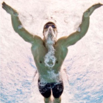
Усачёв Илья
КМС по плаванию, КМС по летнему полиатлону
Возраст: 28 лет
Возраст: 28 лет
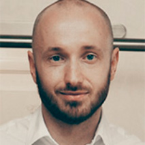
Сударев Владимир
Диетолог
Возраст: 32 года
Возраст: 32 года
Заполните форму и наш координатор свяжется с вами
Либо позвоните нам по телефону: +7 (495) 332-99-09
Среди нас только лучшие тренеры
Мы сделаем ваши занятия безопасными, эффективными и создадим приятную атмосферу на занятии. Тренировки проводятся в соответствии с вашими индивидуальными особенностями и целями. Специалисты, прошедшие предварительный отбор, раз в год проходят аттестацию, на основании которой они допускаются к работе, что позволяет удостовериться в профессионализме тренера.
Отзывы
Сергей Карпенко
Издатель, публицист
Был у меня абонемент в фитнес-зал. И удостоил я их своим визитом всего несколько раз за год, кстати среди моих знакомых тоже немало таких же «ярых фанатов спорта», как и я. И ведь всегда находились какие-то дела и причины, препятствовавшие тому, чтобы приехать на тренировку. А поддерживать себя в форме то надо...Уже и пузико наел, да и чувствую, что не хватает какого то тонуса. Увидел рекламу персональных тренировок с выездом, дай думаю попробую...
Даниил Маврин
Политик
Все плюсы от занятий с тренером дома ощутил сразу же! Времени, как и у всех деловых людей, у меня в обрез. Доехать до фитнес-клуба и обратно занимает в 3 раза больше времени, чем занятие дома. Людей лишних нет-комфортно. Дома, как говориться, и стены помогают! Поначалу думал, что дома не смогу полноценно заниматься, но после того как попробовал обратиться к Fitness Doma, понял, что с хорошим тренером с этим проблем нет.
Дмитрий Семенов
Бизнесмен, нефтяник
Регулярно занимаюсь боксом с тренером-все нравится. Тренировки интересные атмосфера на занятии рабочая. Занятия мне добавили уверенности в том, что если придется применять силу, я смогу за себя постоять. Да и просто получаю от тренировок очень приятные эмоции и разрядку. Я живу загородом и добираться до зала мне крайне неудобно-так что Fitness Doma меня очень выручили. Хочется поблагодарить компанию за профессионализм и ответственность в работе.
Станислав Березкин
Бизнесмен
Моей целью было похудение на 5 кг за месяц — отпуск был не за горами. Занимался дома без какого-либо специального оборудования, тренер все привозил с собой (что мог). Тренер обьяснил мне с самого начала, что несмотря на то, что первое время изменения в весе могут быть незначительными, тело приобретет спортивную форму. Специальные тесты выявят сжигается ли жир. Мне показалось интересным предложение возврата денег за 10 тренировок в случае отсутствия результата...
Валентина Рогожина
Домохозяйка
Из-за нехватки свободого времени и необходимости быть рядом с детьми решила, что заниматься я буду дома. Поначалу попробовала заниматься самостоятельно, был небольшой набор фитнес оборудования дома. Целью было укрепление мышц, тонус, небольшое похудение в области бедер. Быстро поняла, что не чувствую нужные мышцы и что не все делаю правильно. Результаты были неярковыраженными, практически не чувствовала изменений. Решила обратиться к тренеру. Выбрала компанию Fitness doma...
Свяжитесь с нами
Наш координатор ответит на любые интересующие вас вопросы
+7 (926) 763-26-58info@fitness-doma.su
Форма связи
Мы перезвоним вам в течение 10 минут